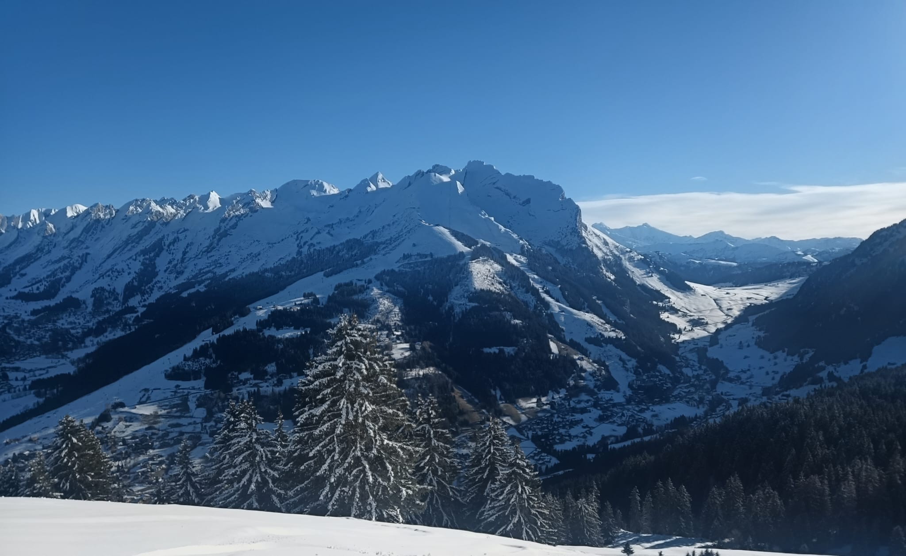

🏘️
Le centre du village
Commerces, restaurants, terrasses, patrimoine et accès rapides aux activités.
Un village animé au cœur du massif, connu pour son ski, ses alpages, ses terrasses et ses différents secteurs de montagne.

Commerces, restaurants, terrasses, patrimoine et accès rapides aux activités.
Un plateau lumineux, agréable pour le ski, la randonnée et les panoramas ouverts.
Un secteur d’altitude apprécié pour son relief, son ambiance sportive et ses grandes vues.
Un versant de caractère qui complète la diversité du domaine de La Clusaz.
Randonnée, vélo, parapente, découverte des alpages et pauses gourmandes.
Adresses conviviales, produits locaux et moments partagés après une journée dehors.
La page Domaines skiables présente les secteurs, les vidéos et les informations utiles pour préparer une journée sur la neige.
Découvrez les vols et l’expérience Aravis Parapente dans les paysages de La Clusaz et des environs.